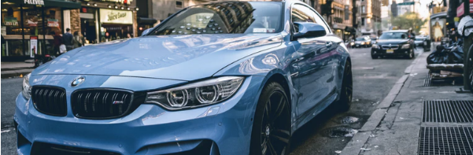

M-series
M2 media

The BMW M2 is a high-performance version of the BMW 2 Series automobile developed by BMW's motorsport division, BMW M GmbH.
As the 2 Series replaced the 1 Series coupé and convertible models, the M2 was marketed as the cheapest and most basic M Car in the range.
The M2 featured a more powerful and responsive, turbocharged and special tuned N55 engine, while its successor, the M2 Competition,
featured a twin-turbocharged engine (S55); improved handling, suspension, and braking systems; aerodynamic body enhancements; interior/exterior accents with the
tri-colour "M" (Motorsport) badging and reduced weight. The M2 is unofficially considered as an indirect successor to the BMW 1 Series M Coupé.